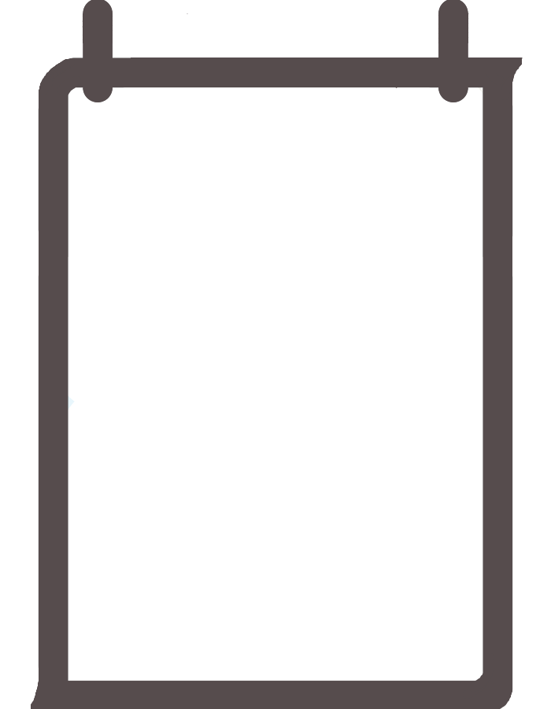

            <div align="right">
                <button id="loginFormClose">
                    
                </button>
            </div>

            <div class="content">
                
                <form class="loginForm" action="registerCheck.jsp" method="post">

                    <h2 style="font-size: 48px; color: #564c4d;">Register</h2>
                    <div class="container">
                        <div class="input">
                            <input type="email" id="emailInput" placeholder="이메일을 입력하세요" name="emailInput" required>
                        </div>

                        <div class="input">
                            <input type="text" id="nicknameInput" placeholder="닉네임을 입력하세요" name="nicknameInput" required>
                        </div>

                        <div class="input">
                            <input type="password" id="passwordInput" placeholder="비밀번호를 입력하세요" name="passwordInput" requrired>
                        </div>

                        <div class="input">
                            <input type="password" id="passwordCheck" placeholder="비밀번호를 다시 입력하세요" name="passwordCheck" requrired>
                        </div>

                        <button id="login" type="submit">회원가입</button>
                    </div>

                    <button class="togglePage" type="button" onclick="location.href='login.html'">로그인으로 돌아가기</button>
                </form>
            </div>
        </div>
    </div>
</div>
</body>
<script>
    function show () {
        document.querySelector(".background").className = "background show";
    }

    function close () {
        document.querySelector(".background").className = "background";
    }

    function toggleImage() {
        const src = document.querySelector('#loginMaintainCheckbox').src;
        if(src.indexOf('filled') != -1)
            document.querySelector("#loginMaintainCheckbox").src="./image/checkbox_blank.png";
        else if(src.indexOf('blank') != -1)
            document.querySelector("#loginMaintainCheckbox").src="./image/checkbox_filled.png";
    }

    document.querySelector("#loginFormOpen").addEventListener('click', show);
    document.querySelector("#loginFormClose").addEventListener('click', close);
</script>
</html>